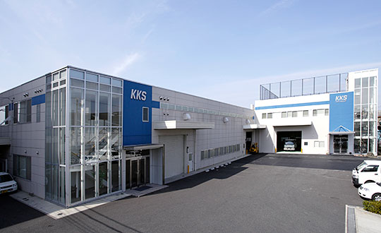

| 大正 | 8年 | 1919年 | 大阪西城郡江成町（現 大阪市福島区浦江）にて金田鉄工所創業。 |
|---|---|---|---|
| 昭和 | 6年 | 1931年 | 朝日新聞社と提携しオートプレート・オートセーバーの国産化に 成功。 |
| 21年 | 1946年 | 有限会社日本新聞機械製作所と社名変更。 | |
| 27年 | 1952年 | 株式会社金田機械製作所と社名変更。 本社・工場を豊中市に移設。 |
|
| 39年 | 1964年 | 全自動横型鋳造仕上機の国産化に成功。 | |
| 45年 | 1970年 | 株式会社東京機械製作所と製品販売に関する業務協定成立。 | |
| 46年 | 1971年 | 川西市出在家に川西工場新設。 | |
| 47年 | 1972年 | 新聞搬送用KSキャリアを開発し大阪印刷文化展に発表。 朝日新聞社のご指導のもと、新構想樹脂版ARS成型機を完成。 JANPSにて公開。 |
|
| 58年 | 1983年 | 電動トロッコ式重量物搬送システム、新聞巻取紙搬送システムをJANPS’83に展示。 | |
| 63年 | 1988年 | 自動紙継支度装置（PPR）実用機の完成。1号機納入。 | |
| 平成 | 元年 | 1989年 | PPRとバッテリー式電動トロッコの組合せをJANPS’89で実演展示。 |
| 2年 | 1990年 | 大阪市西淀川区竹島に大阪工場を完成。 AGV（電磁誘導方式）給紙設備、全自動ワンプ剥離装置を 新工場で公開展示。 |
|
| 3年 | 1991年 | 紙庫、給紙部門における一連の省人省力設備をJANPS’91で実演展示。 | |
| 5年 | 1993年 | 立体紙庫、ワンプ剥離機、AGVシステム、サービスフィーダーをJANPS’93で展示。 | |
| 12年 | 2000年 | 大阪工場にてNECとの共同開発によるCTPシステム（MARK2A）と AGSを公開運転。 提携しているIDAB社製CGCS（センターグリップキャリア）も 展示。 |
|
| 14年 | 2002年 | 日本新聞協会技術委員会にて、CTPシステムが 2001年度技術開発奨励賞に選ばれる。 |
|
| 15年 | 2003年 | 本社機能及び所在地を豊中市から大阪工場へ移行。 （現 西淀川区竹島） |
|
| 16年 | 2004年 | 豊中工場・川西工場を閉鎖し大阪工場に集約。 大阪工場増設新工場完成。 BTC（センターグリップキャリア）、PPR（テサ仕様） AGSの実演展示。 |
|
| 17年 | 2005年 | JANPS'05でBTCを実演展示。 | |
| 19年 | 2007年 | 大阪工場新々工場完成。事務棟及び工場棟増設。 新型AGS、WPR（ワンプ処理機能付支度装置）を実演展示。 |
|
| 20年 | 2008年 | 株式会社KKSに社名変更。 | |
| 21年 | 2009年 | （株）東京機械製作所システム機器部がKKSに完全移管。 創立90周年内覧会を執り行う。 |
|
| 24年 | 2012年 | JANPS’12で宛名付小束作成装置A-FS200を実演展示。 | |
| 25年 | 2013年 | 国立印刷局へ競争入札し落札したPPR・WSP・キャリア・ 発送設備の納入を、11月より翌期にかけて開始する。 |
|
| 26年 | 2014年 | 創立95周年式典を執り行う。 第二工場屋根に50kwソーラパネルを設置する。 |
|
| 27年 | 2015年 | JANPS'15で宛名付小束作成装置の簡易包装タイプA-FS200Wを 実演展示。 新型宛名印刷装置APT-600、荷姿向上タイプCS-800Nも併せて 展示し、それぞれ販売開始する。 |
|
| 29年 | 2017年 | 関西グランドフェアにAGS(磁気/レーザー誘導）ハイブリッド1ton仕様を出展。 組織変更 新規事業開発推進室を新設。 |
|
| 30年 | 2018年 | 国際物流総合展にAGV(磁気/レーザー誘導）ハイブリッド1ton仕様を出展。 JANPS’18にCS-700(CS-500 後継機)を出展 。 |



- CopyRight © KKS,LTD.
株式会社KKS 〒555-0011 大阪市西淀川区竹島4丁目11番54号 TEL：06-6471-7771（代表） FAX：06-6477-5374